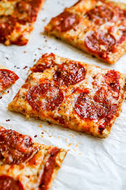

Pizza
Home

Description
This High-Protein Chicken Crust Pizza is a game changer for pizza lovers looking for a healthier, more filling alternative to traditional dough. The crust is made from lean ground chicken breast, which is packed with protein, helping you stay fuller longer and supporting musclre recovery. Topped with melty mozzerela, savory sauce, and your favorite fresh veggies, this pizza is low in carbs but big on flavor. Whether you're following a low-carb diet or just want a protein boost, this pizza delivers all the comfort of your favorite meal without the guilt!
Ingredients
For the Crust
- 1 lb (450g) ground chicken breast
- 1/2 cup shredded mozzarela (part-skim or low-fat)
- 1/4 cup grated parmesan cheese
- 1 egg
- 1/2 tsp garlic powder
- 1/2 tsp onion powder
- 1/2 tsp italian seasoning
- Salt and pepper to taste
For the Toppings
- 1/3 cup low-sugar pizza sauce or crushed tomatoes
- 1/2 cup shredded mozzarella (part skim)
- 1/4 cup sliced bell peppers
- 1/2 cup red onions
- Turkey peppoeroni or grilled chicken
- Fresh Basil or arugula
Steps
- Preheat the oven to 400°F (200°C). Line baking sheet or pizza pan with parchment paper
- In a mixing bowl, combine ground chicken, mozzarella, parmesan, egg, and spices
- Mix thorougly until you get a sticky dough-like consistency
- Transfer the mixture onto the baking sheet
- Use wet hands or a spatula to press it intoa a flat, round pizza shape
- Bake the crust for 15 minutes, or until firm and edges begin to brown
- Remove the crust from the oven
- Spread the sauce, sprinkle cheese and your favorite toppings
- Place back into the oven and bake for another 8-10 minutes or until cheese is melted and bubbly
- Let it rest for 2-3 minutes before slicing